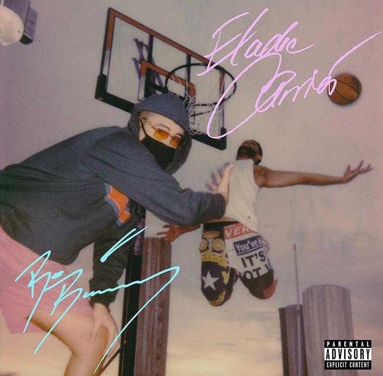

Bab bunny es uno de los artistas más famosos con los que ha trabajado Eladio Carrión. Ambos comparten una fuerte conexión con el trap latino y el rap, por lo que sus colaboraciones suelen tener letras intensas y ritmos muy pegadizos. Trabajar con Bad Bunny ayudó a que Eladio ganara más reconocimiento dentro de la industria musical, ya que Bad Bunny es considerado uno de los artistas más influyentes de la música urbana en el mundo.

El origen de la canción **Kemba Walker** está en la colaboración entre Eladio Carrión y Bad Bunny. El tema fue lanzado en 2020 como parte del álbum **Sauce Boyz**.
El nombre de la canción está inspirado en el jugador de baloncesto **Kemba Walker**, conocido por su velocidad y habilidad en la cancha. En la canción, los artistas utilizan esa referencia para compararse con el jugador, mostrando cómo destacan en la música de la misma manera que él destaca en el baloncesto.
La canción mezcla el estilo de trap de Eladio con el flow característico de Bad Bunny, lo que hizo que el tema se volviera muy popular dentro del género urbano. Además, esta colaboración ayudó a fortalecer la relación musical entre ambos artistas y a consolidar a Eladio Carrión como una figura importante dentro del trap latino.
Kemba walker